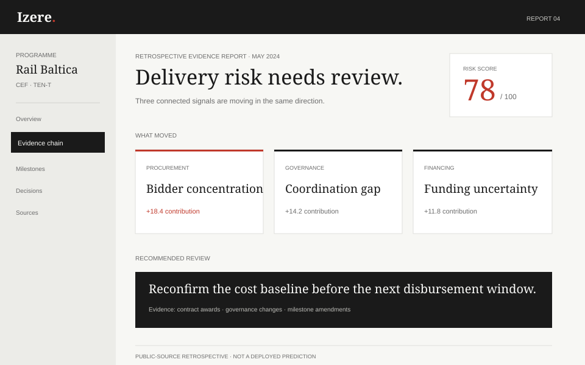

Baseline
Programme structure reconstructed from public contracts, governance events and milestone changes.
Izere connects fragmented project evidence and surfaces early warnings that delivery teams can inspect, explain and act on.

Open live demo →Illustrative retrospective view · public evidence · not a deployed prediction
€378B in Cohesion 2021–27. 11% worst-on-record absorption. You’ll find out in May, not January.
Public-programme context and retrospective scenario values. Izere’s claims will be validated through pilots before production deployment.
Rail Baltica shows why delivery intelligence must connect procurement, coordination and financing evidence before the formal review catches up.
Programme structure reconstructed from public contracts, governance events and milestone changes.
The retrospective model crosses its review threshold as concentration, coordination and financing signals compound.
The programme evidence continues to move in the same direction; the warning is no longer a single isolated signal.
The formal audit makes the cost and delivery problem visible publicly.
Retrospective illustration using public sources. Rail Baltica is not an Izere customer, and this does not establish that Izere would have predicted or prevented the outcome.
Project facts stay linked to their source. Teams can follow a warning from the document to the affected milestone and responsible decision.
Izere shows what changed, why it matters and what should be checked next. The system supports judgment; it does not replace it.
Every score ships with its evidence chain—model class, feature weights and provenance—readable by your auditor before deployment.
Former AfDB Group. Built execution monitoring for €4B+ in infrastructure programmes. Based in Luxembourg.
A focused 6–8 week pilot to test evidence quality, warning usefulness and time saved for the delivery team.